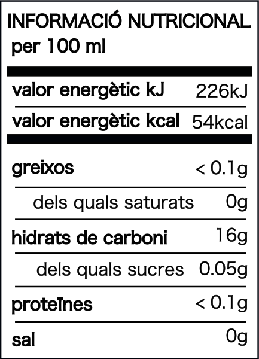

Vi RAS Orange 2023
65% Parellada · 35% Chardonnay

| Ingredients | Raïm, llevats indígenes |
|---|---|
| Valor energètic | 312 kJ / 75 kcal per 100 ml |
| Hidrats de carboni | 0,8 g |
| dels quals sucres | <0,5 g |
| Sal | <0,01 g |
| Alcohol | 11,5% vol |
| Productor | Torres de la Serra · Els Hostalets de Pierola, Catalunya |